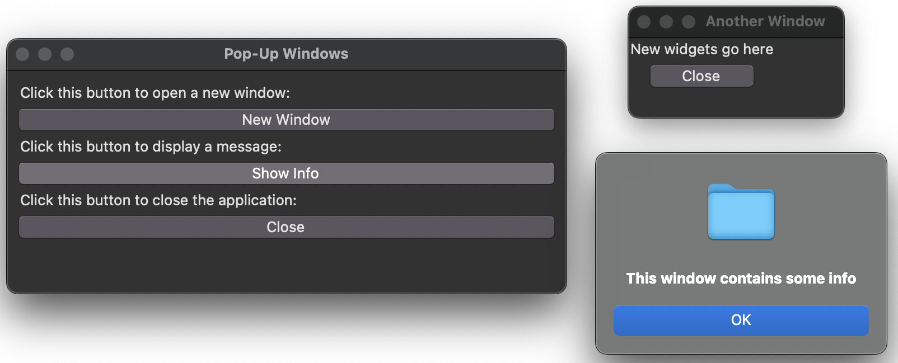

Additional Windows#
Author: Mike Wood
Learning Objectives: By the end of this notebook, you should be able to:
Generate new windows that open from root windows
Add pop-up windows such as messages and errors
Add a top-bar file menu to a GUI
New Windows#
In this example, we’ll see how we can create new windows from our application. Take a look at the following example:
# a GUI with some test pop-up windows
# import the tkinter package
from tkinter import *
from tkinter import ttk
from tkinter.messagebox import showinfo
# create a class called PopupWindows
class PopupWindows:
# add an init functions for this class
def __init__(self, root):
# Add a title to the window
root.title("Pop-Up Windows")
# Define the geometry of the window
root.geometry("500x200")
# Configure the root so that it stretches in all directions
root.columnconfigure(0, weight=1)
root.rowconfigure(0, weight=1)
# make a frame for the GUI
self.frame = ttk.Frame(root, padding = "10 10 10 10")
self.frame.grid(column=0, row=0, sticky=(N, W, E, S))
# weight column to expand with the window
self.frame.columnconfigure(0, weight=1)
# add a label for the new window
label = ttk.Label(self.frame,
text="Click this button to open a new window:")
label.grid(column=0, row=0, sticky=(N, W, E, S))
# add a button for the new window
self.button_new_window = ttk.Button(self.frame,
text="New Window",
command=self.another_window)
self.button_new_window.grid(column=0, row=1, sticky=(N, W, E, S))
# add a label for the message display
label = ttk.Label(self.frame,
text="Click this button to display a message:")
label.grid(column=0, row=2, sticky=(N, W, E, S))
# add a button for the message display
self.button_showinfo = ttk.Button(self.frame,
text="Show Info",
command=self.showinfo_popup)
self.button_showinfo.grid(column=0, row=3, sticky=(N, W, E, S))
# add a label for the closing of the app
label = ttk.Label(self.frame,
text="Click this button to close the application:")
label.grid(column=0, row=4, sticky=(N, W, E, S))
# add a button to close the app
self.button_showinfo = ttk.Button(self.frame,
text="Close",
command=root.destroy)
self.button_showinfo.grid(column=0, row=5, sticky=(N, W, E, S))
# define a function to open a new window
# using a Toplevel object
# add a label and a button to close the window
def another_window(self):
win = Toplevel()
win.title("Another Window")
label = ttk.Label(win, text="New widgets go here")
label.grid(row=0, column=0)
close_button = ttk.Button(win, text="Close", command=win.destroy)
close_button.grid(row=1, column=0)
# define a function to display some info using
# the showinfo function
def showinfo_popup(self):
showinfo("Window", "This window contains some info")
# create a root Tk object
root = Tk()
# create a PopupWindows object with the Tk root object as an argument
PopupWindows(root)
# call the mainloop method on the Tk root object
root.mainloop()
This script generates the following GUI along with the new window and pop-up shown to the right:
This script has several new features. Let’s summarize:
Top Level Windows#
In the first part of the script, we bind a function called another_window to the first Button widget:
self.button_new_window = ttk.Button(self.frame,
text="New Window",
command=self.another_window)
If we take a look at this function, we can see that we use the TopLevel() command to generate a new window:
win = Toplevel()
After the new window is generated, we can proceed to adding new widgets and other features to this window just as we do for the root:
win.title("Another Window")
label = ttk.Label(win, text="New widgets go here")
label.grid(row=0, column=0)
Pop-Up Windows#
In the next part of our GUI, we demo the showinfo box. Note that this is a much simpler “window” as is used to give a quick message. In this case, we just show the message “This window contains some info” with the following:
showinfo("Window", "This window contains some info")
Note that we imported the showinfo message box at the top of the script:
from tkinter.messagebox import showinfo
There are several different types of messages boxes that can be used for other types of messages (e.g. warnings, errors, etc). A summary of these message boxes is available on the tkinter documentation HERE.